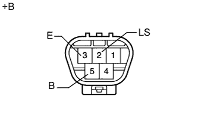
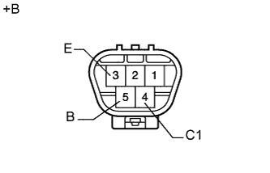

ЭЛЕКТРОДВИГАТЕЛЬ ЗАДНЕГО СТЕКЛООЧИСТИТЕЛЯ > ПРОВЕРКА |
| 1. ПРОВЕРЬТЕ ЭЛЕКТРОДВИГАТЕЛЬ ЗАДНЕГО СТЕКЛООЧИСТИТЕЛЯ В СБОРЕ |
|  |
Проверьте работу стеклоочистителя в непрерывном режиме.
Проверьте, что электродвигатель заднего стеклоочистителя работает при подаче напряжения аккумуляторной батареи на контакты.
| Контакты для подключения диагностического прибора | Заданные условия |
| Положительный (+) вывод аккумуляторной батареи → 5(B) Отрицательный (-) вывод аккумуляторной батареи → 2 (LS) Отрицательный (-) вывод аккумуляторной батареи → 3 (E) | Электродвигатель работает на низких оборотах (LO) |
| *a | Устройство с неподсоединенным жгутом проводов (электродвигатель заднего стеклоочистителя в сборе) |
|  |
Проверьте работу стеклоочистителя в прерывистом режиме.
Проверьте, что электродвигатель заднего стеклоочистителя работает при подаче напряжения аккумуляторной батареи на контакты.
| Контакты для подключения диагностического прибора | Заданные условия |
| Положительный (+) вывод аккумуляторной батареи → 5(B) Отрицательный (-) вывод аккумуляторной батареи → 4 (C1) Отрицательный (-) вывод аккумуляторной батареи → 3 (E) | Электродвигатель заднего стеклоочистителя работает прерывисто |
| *a | Устройство с неподсоединенным жгутом проводов (электродвигатель заднего стеклоочистителя в сборе) |